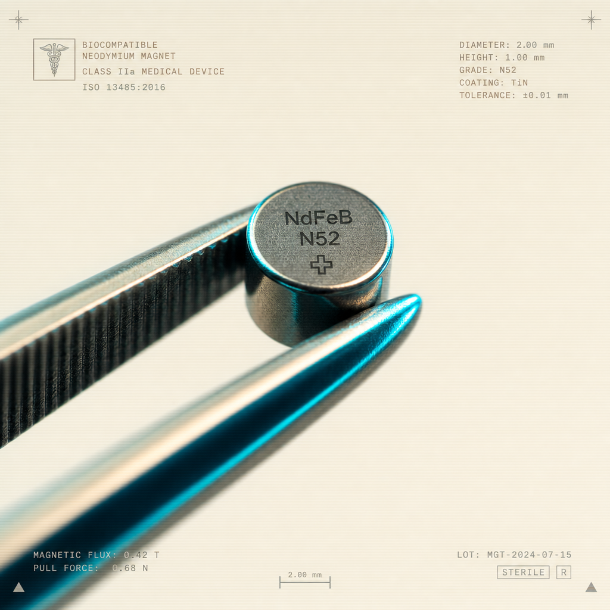
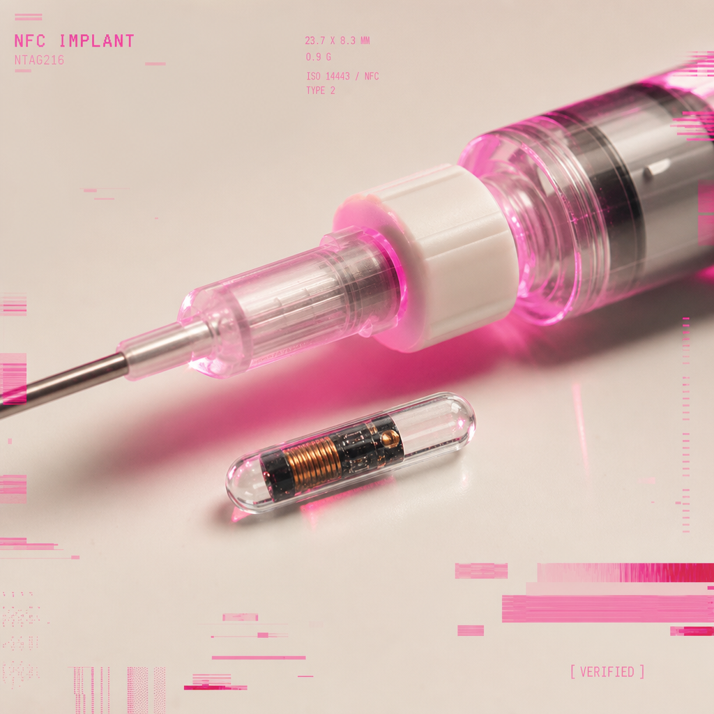

47 protocolos revisados por pares. La práctica responsable empieza por leer todo antes de tocar nada.
!!
ADVERTENCIA // LEÉ ESTO PRIMERO: Ninguna guía aquí sustituye atención médica profesional. Toda intervención corporal conlleva riesgos de infección, rechazo o daño permanente. Si no podés mantener un campo estéril o no entendés tu anatomía local, NO procedas. La comunidad recomienda consultar a un body modification artist licenciado.

GUIDE_007BEGINNER
Cómo esterilizar tu kit de instalación en casa
Protocolo paso a paso para autoclave casero, alcohol isopropílico, chlorhexidine y manejo de campo estéril improvisado. Incluye lista de materiales y errores comunes.
DIFF: ~ 35 MIN LECTURASANITARIO

GUIDE_012INTERMEDIATE
Instalación de NFC NTAG216 en web de la mano
Anatomía vascular del pulgar, técnica de aplicador, posicionamiento subdérmico y aftercare durante las primeras 72 horas.
DIFF: ~ 50 MIN
GUIDE_019ADVANCED
Diagnóstico de rechazo: signos tempranos y protocolo de explante
Cómo distinguir inflamación normal de infección sistémica. Banderas rojas, cuándo ir a emergencias, y cómo retirar un implante de forma segura.
DIFF: ~ 40 MINEMERG
GUIDE_022BEGINNER
Tu primer magneto: qué esperar y qué NO esperar
Sensibilidad real, qué materiales detectás, y mitos comunes desmentidos por la comunidad.
DIFF: ~ 15 MIN
GUIDE_034MEDICAL
Anestesia local: opciones legales en Latam
Comparativa de lidocaína tópica, hielo y bloqueos. Marco legal por país.
DIFF: ~ 22 MIN
GUIDE_041AFTERCARE
Protocolo de cuidado: días 1 al 30
Limpieza diaria, signos de alerta, alimentación recomendada y actividades a evitar.
DIFF: ~ 18 MIN
GUIDE_046ADVANCED
Programación de tu NFC: payloads, URLs y vCards
De firmar contratos a abrir puertas: tutorial completo sobre escritura de chips NTAG con apps libres, formatos NDEF y consideraciones de privacidad. Incluye scripts en Python para flashear desde escritorio sin apps móviles.
DIFF: ~ 65 MINPROGRAMMING
GUIDE_028INTERMEDIATE
Botiquín mínimo del biohacker responsable
Lista de 23 ítems esenciales, marcas accesibles en Latam, y rotación de fechas de caducidad.
DIFF: ~ 25 MIN
GUIDE_037MEDICAL
RMN y aeropuertos: cómo viajar con tu implante
Documentación recomendada, comportamiento de detectores y casos reportados por la comunidad.